Deep Learning — Quiz 2 · 2025 · Term 2
16 questions · 50 marks · IIT Madras BS Data Science · course code CS3004
MCQQ13 marks
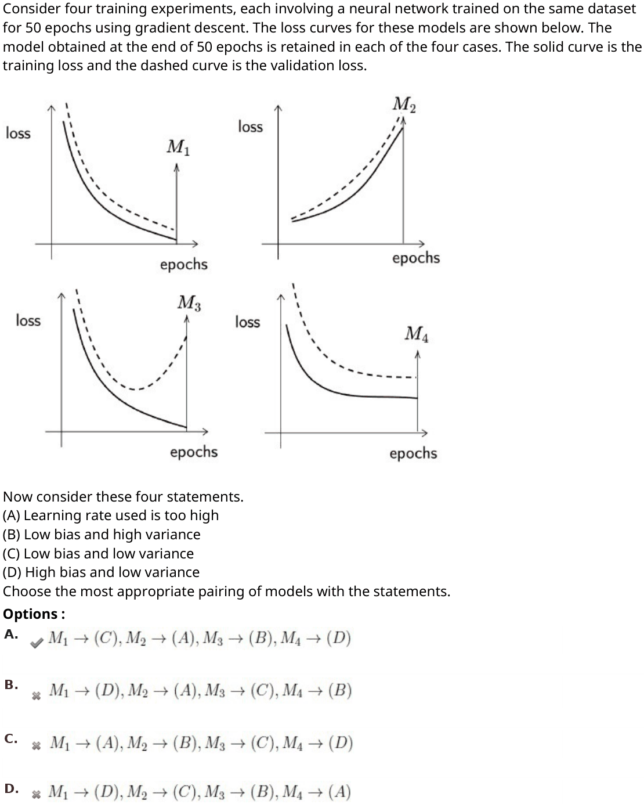
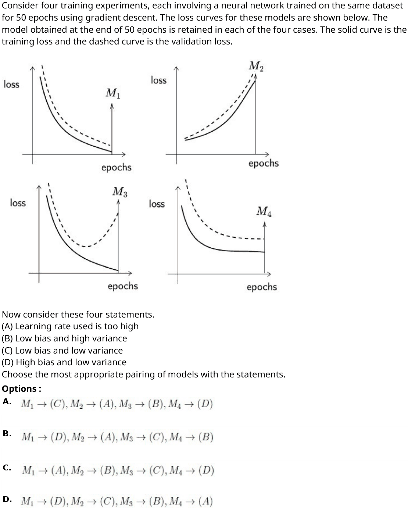
Answer: A
MSQQ23 marks
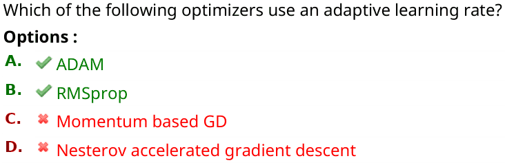
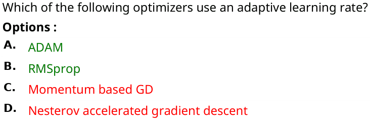
Answer: A, B
SAQ32 marks
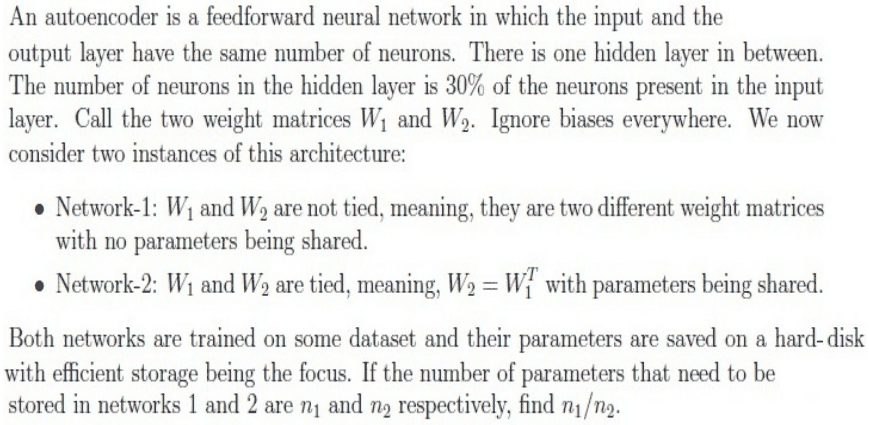
Answer: 2
SAQ44 marks
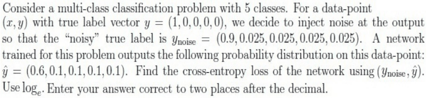
Answer: 0.64 to 74
Comprehension · Q5–Q7
DATAShared data for Q5–Q7

MCQQ53 marks
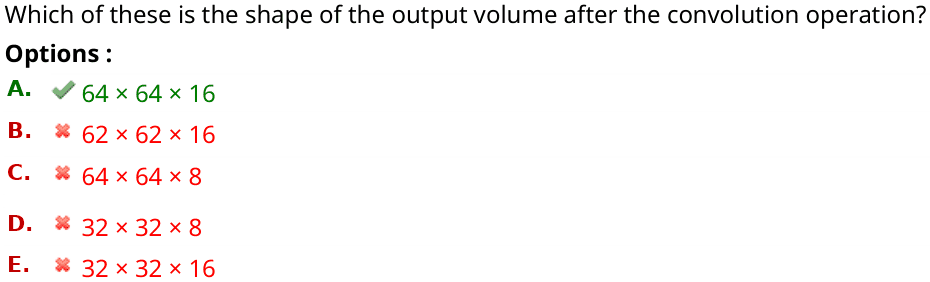
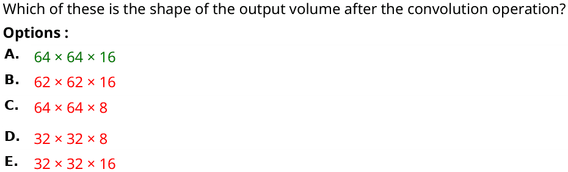
Answer: A
SAQ63 marks
Answer: 3200
MCQQ73 marks
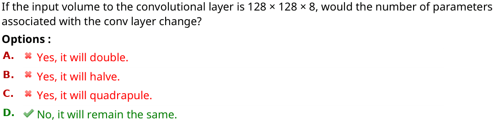
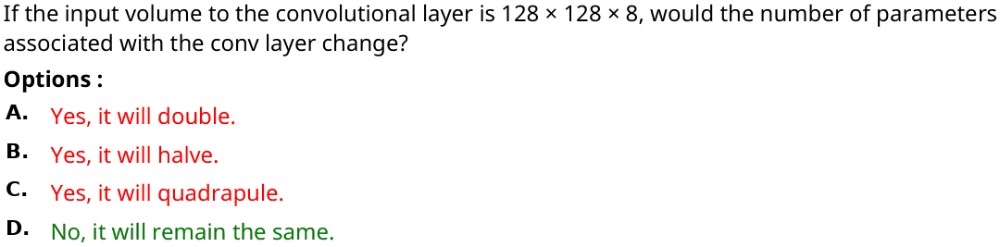
Answer: D
Comprehension · Q8–Q10
DATAShared data for Q8–Q10
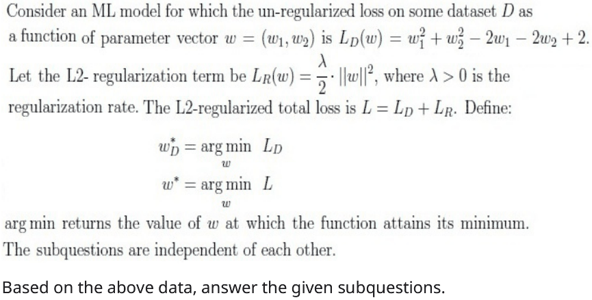
MCQQ83 marks
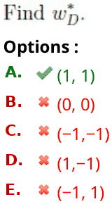
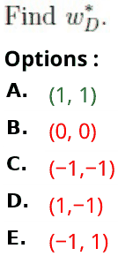
Answer: A
SAQ93 marks
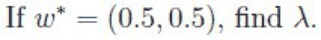
Answer: 2
MCQQ103 marks
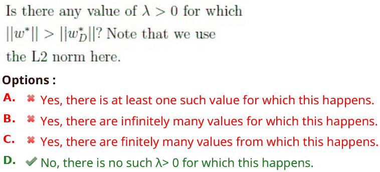
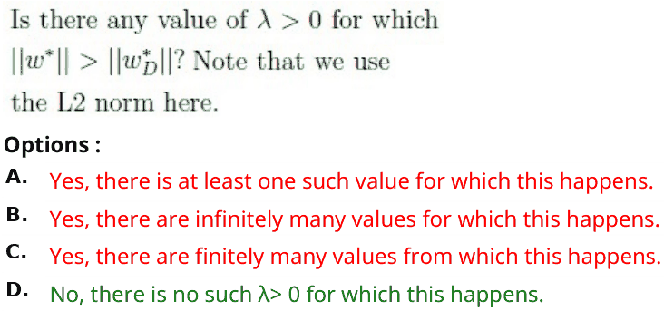
Answer: D
Comprehension · Q11–Q13
DATAShared data for Q11–Q13

MCQQ113 marks
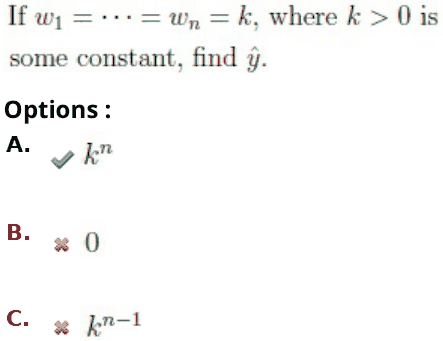
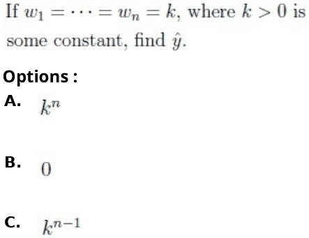
Answer: A
MCQQ123 marks
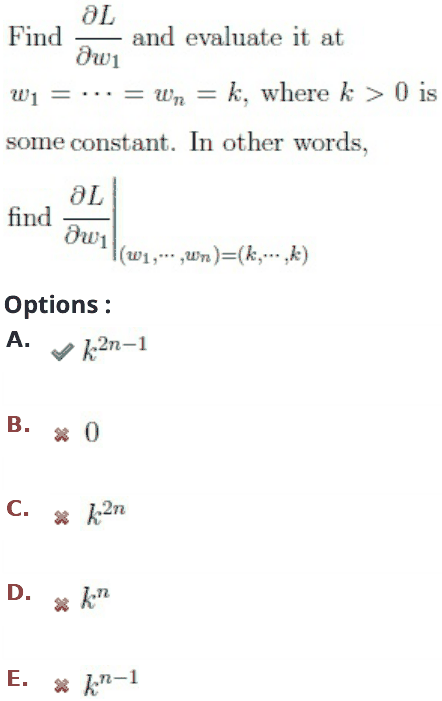
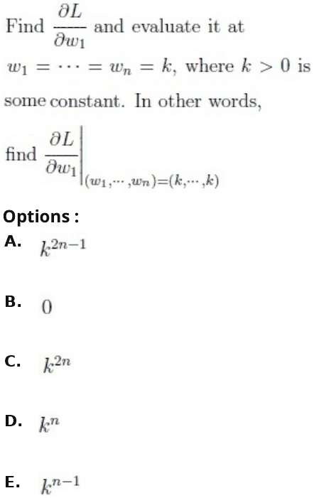
Answer: A
MCQQ134 marks
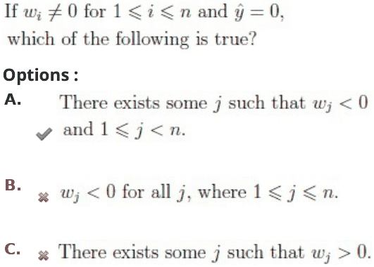
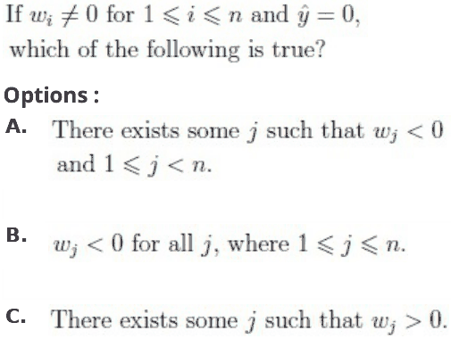
Answer: A
Comprehension · Q14–Q16
DATAShared data for Q14–Q16

MCQQ143 marks
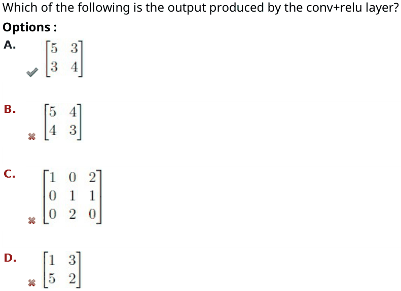
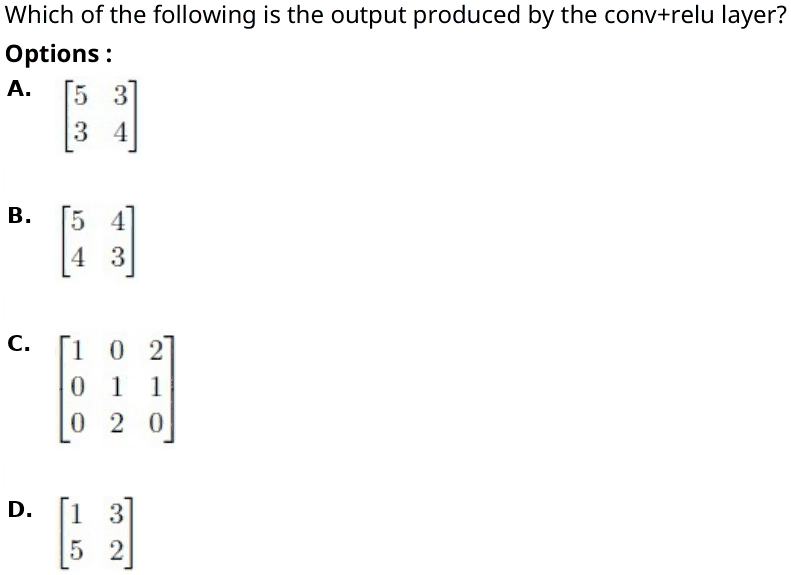
Answer: A
SAQ153 marks
Answer: 5
SAQ164 marks
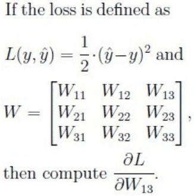
Answer: 2 (also accepted: Business Analytics)
Questions are cropped directly from the original exam PDF, so equations, figures and the official answer marks are exactly as published.